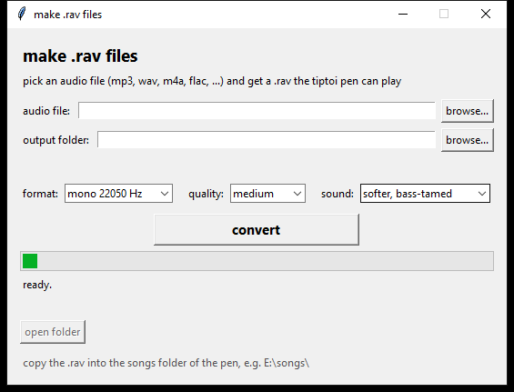

Your own audio,
on a tiptoi pen.
RAVage turns an mp3, wav, m4a or flac into a .rav file the pen will
play, and turns stock .rav files back into .ogg. Both
directions run in this tab. Your file never reaches a server, and there's no ffmpeg.
waiting for a file
it never leaves this tab
the pen's key is in its firmware; try CommonI2 first
.rav files to see which key your pen wants.
Or take a build
Same tool, no browser. PyInstaller one-file builds with ffmpeg and the key
table inside, so there's nothing to install and no Python on your PATH.
macOS ones are unsigned.
Encrypt, and decrypt
The pen stores each track as a 32-byte header followed by an Ogg Vorbis stream that's been run through a keyed byte transform. RAVage does the whole pipeline: resample, encode, encrypt. It reads the transform backwards too, which is how the format got worked out in the first place.
- Input
- Whatever ffmpeg can decode. In the browser, whatever your browser can decode, which covers mp3, wav, m4a, flac and ogg.
- Output
- Mono, 22050 Hz Ogg Vorbis inside a 0x20-byte RAV header.
- Pen keys
CommonI2on the pens we've tested,CommonIDon some newer ones. Both are supported; the GUI has a five-beep test that tells you which.- Metadata
- Stripped. The pen rejects streams with a fat Vorbis comment header, and a 9 KB YouTube title block is enough to do it.
- Sound
- 70 Hz high-pass, −4 dB, −1 dB limiter, in the CLI and in the browser. The pen's speaker can't do sub-bass and it just muddies everything.
--no-tameturns it off on the command line. - Damage
- None. Decrypt then re-encrypt returns byte-identical output, unlike the stock files, which are lossy at byte collisions.

It was never cryptography
The community wiki called .rav files "serious crypto" in 2015 and
floated a per-pen secret chip. There isn't one. Every pen ships with the same key
baked into its firmware, and the transform is a four-operation byte shuffle driven
by a 4096-byte table.
| Offset | Size | Field |
|---|---|---|
| 0x00 | 16 | magic Ravensburgerv03\0 |
| 0x10 | 2 | value16, little-endian |
| 0x12 | 1 | flag, always 0xBE |
| 0x13 | 8 | key blob: TABLE[value16 + 3 + i] ^ key8[i] |
| 0x1B | 5 | trailer, fixed 4E 6C 31 F2 65 |
# the 4096-byte table sits in the firmware at 0xDBADC key8 = "CommonI2" # or "CommonID" on some pens checksum = (sum(key8) + value16) & 0xFFFF keystream[i] = TABLE[(checksum + i) & 0xFFF] # 512 bytes # body cipher, applied from 0x20 onward kb = keystream[(pos - 0x20) & 0x1FF] op = pos & 3 op 0 XOR, with pass-through on 0x00/0xFF/kb op 1 (c - kb) & 0xFF op 2 (c + kb) & 0xFF op 3 c ^ kb
Ten years, then a firmware update
No side channels and no leaked keys. The whole thing was in a pen update Ravensburger publishes on their own website.
-
The rabbit hole 2015 → 2025
Issue #115 closed in 2015 with the format declared unsolved. The guess was a per-pen secret on a chip, which would have made this impossible. Nobody looked again for a decade.
-
The firmware was just sitting there
Update3203L.updis a plain Cortex-M image with no obfuscation worth the name. -
Follow the magic bytes
Search the image for
Ravensburgerv03and you land on the audio open routine at0x8DFE84, which calls a key generator at0x8DF380and the decode loop at0x8DF3B4. -
The key was a string literal
"CommonI2", hardcoded, plus the table at0xDBADC. Every pen has it. There was never a per-pen secret to steal. -
It round-tripped fine and the pen said no
The keystream index is payload-relative (
pos - 0x20) but the op selector is absolute (pos & 3). Getting that phase wrong shifted the whole stream by two bytes and the pen skipped the file silently. That cost a couple of days. -
Two quirks
The pen ignores Ogg page CRCs, which is a sloppy decoder and lucky for us. It also rejects fat comment headers, which is why the tool strips metadata.
-
Old MacDonald, Olchi, Drei Chinesen
All decrypted to clean
OggS. Custom files play. Done.
.rav. Gen 3 pens have no player at all, so this tool
doesn't apply to them. If your gen 2 pen runs different firmware, decrypt one
of your own stock .rav files first to see which key it wants, and
tell me what you find.